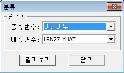

개요
-
분류분석의 결과물은 독립변수를 통해 각 클래스의 label을 예측한 값입니다. 이 값이 종속 변수와 동일하다면 올바르게 예측한 것이고, 그렇지 않다면 잘못 예측한 것입니다. 이 메뉴에서는 변수(종속변수)와 예측변수를 비교하여 오분류 표와 오분류 수 및 오분류율을 계산합니다. 또한, 종속 변수에 몇 개의 클래스가 존재하는지와 클래스 별 데이터 빈도를 보여줍니다.
실행방법
-
[분석] - [정확도 측도] - [분류] 를 선택하면 [분류] 윈도우가 나타납니다.
창에서 관측치 변수와 예측 변수를 선택합니다. 결과 보기 버튼을 클릭하면 분류가 수행됩니다.

결과